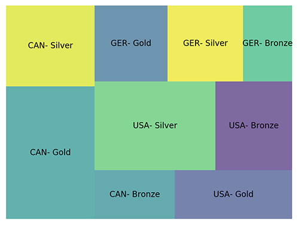

Canadian Female athletes are the best female athletes at the Winter Olympics
It can be proven that female athletes representing Canada at the Winter Olympics- past, and present- are the best in the world!
I have prepared the following charts using Python 3 to help prove my theory.
Donut Plot

This chart shows that, although the United States' female athletes have won the most amount of medals overall, Canadian female athletes have won the MOST amount of gold, coming in first place more times than any other country. I've used Germany and the States as main comparisons because they, alongside Canada, are the top three in the world.
Ladies Bronze

This chart takes a close look at the amount of bronze medals won by the top three countries' female athletes. As you can see, the United States has the most amount of bronze medals earned by females. Over 40% of bronze medals handed out to women in the top three countries went to American women.
Ladies Silver

Examining the distribution of silver medals, this chart reveals that American female athletes also take home a LOT of silver medals within the top 3, 45.3% of them to be exact.
Ladies Gold

This is the chart that shows where Canadian female athletes really start to dominate. This chart gives us a better look at just how many medals the Canadian women are bringing home from the Winter Olympics- over HALF of the gold medals handed out to the top three countries to women come back to Canada.
Unknown Chart...
This chart here shows, by mass, the amount of gold, silver, and bronze medals each of the 'top three' countries' female athletes earned.
In Conclusion...
Team Canada's females OWN the Winter Olympics! Our girls have earned more gold medals in the winter games than any other country.
Our dominance has been proven mainly in the sport of Ice Hockey where 101 medals have been earned over the years by Canadian female athletes.
Back to top